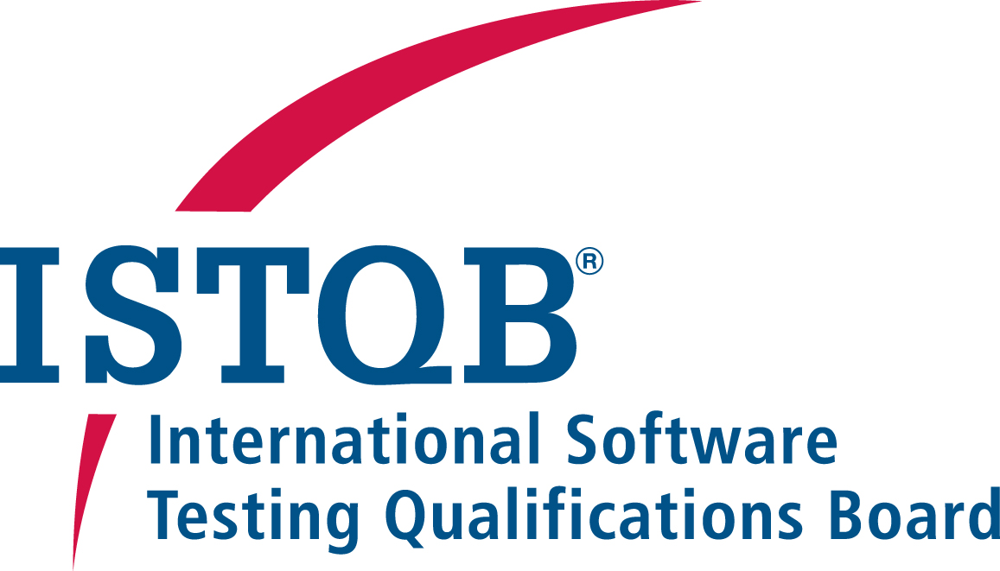

Sushmitha Kolluru
Software Test Engineer
|
Lakshmi Sushmitha Kolluru
Spurgeonlaan 80
Amstelveen, 1185 BD
+31-612678920
sushmitha.kolluru15@gmail.com
|

|
|
Professional Summary
|
-
Highly skilled and ISTQB certified software testing professional bringing morethan 3 years of experience, focusing on test strategies and execution, fueling swift corrective actions, significant cost savings and fault free audits.
-
Hands on technology professional with experience on a plethora of applications. Contributed and led teams to successful delivery having coordinated the communication in different geographies.
|
Skills
|
-
Experience with Agile Methodologies like Scrum/DevOps
-
Expert in formulating and executing Test Strategies & Reporting
-
Extensive knowledge on all SDLC Phases emphasizing continous Quality Assurance and automation
-
Expertise in testing tools like ALM, HP Quality Centre and Quick Test Professional
-
Experience in SOAP UI Testing
-
Experience in API Testing with tools like Postman
-
Acquaintance with automation testing using Selenium & QTP
-
Articulate Written and Verbal Communication skills
|